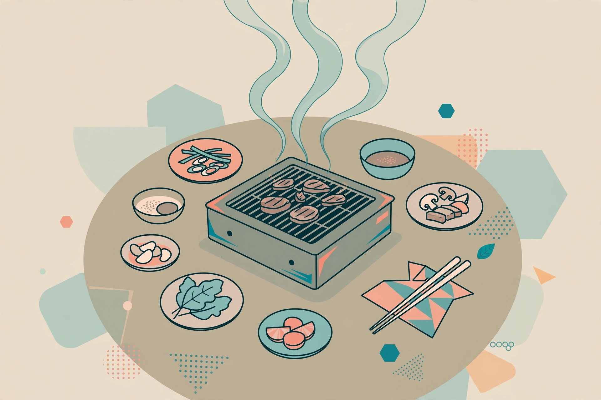

病気療養中のシングルマザーが、息子と友達との焼肉代2,980円が出せないと投稿したところ、PayPayで支援が相次ぎ、感謝を伝えた後にアカウントが削除された。午前には、困っている人の投稿を丸々真似するアカウントへの注意喚起がトレンドの起点となり、困っている人と助けたい人をマッチングするアプリへの要望（336いいね、83件の返信）も出ている。支援への感謝と、「詐欺だ」「乞食だ」という批判、「送る側にも自己責任がある」という声が並走している。14:46時点ではトレンド一覧から外れ、Recent検索でも関連する新しい投稿は見つからなかった。夜には「PayPay支援」としてトレンドに再浮上し、論点が「詐欺か否か」から「PayPayの規約違反か」へ移った。
焼肉代支援と同一の話題。息子の焼肉代に困る母親の投稿に支援が集まり、感謝後にアカウントが削除されたという流れでトレンド化している。
11月23日の福島1Rで、古川奈穂騎手の騎乗するルーストカールが内側へ斜行し、後続のブレイズリーが接触して転倒、ブレイズリーは第2頸椎粉砕骨折で死亡した。JRAは古川騎手を12月5日から13日まで（開催4日間）の騎乗停止とした。処分を「軽すぎる」とする声と、過熱する批判への戒めの声が並ぶ。
Snow Man名古屋公演での目黒蓮への歓迎やラウールのパフォーマンスへの称賛が集まる。昨夜放送のラジオ「Snow Manの素のまんま」（文化放送、21:00〜21:30）への感想も並び、阿部亮平の歌舞伎風アドレス読みが「今日イチ笑った」と語られている。
ドラマ『ポリティカルパン』第8話（11月25日放送）で、香取慎吾演じる玉矢総理が「全権委任法」「だから憲法を改正しよう」と口にするラストが話題に。「得体の知れない感」「親しみやすさと底知れなさが混在する」演技への絶賛の声と、現実の政治への重ね合わせの語りが広がる。一方で早めに脱落したという声もある。
にやまの人気BLマンガが実写ドラマ化。MBS「ドラマフィル」枠で2027年1月21日から放送され、ONE N’ ONLY・沢村玲と鬼倉龍大がW主演を務める。「バックハグ」のキービジュアルも公開された。原作ファンの喜びと、実写化への「コレジャナイ感」が並んでいる。14:46時点ではトレンド一覧から外れた。
日テレ系の音楽特番が11月28日（土）に生放送されるのを前に、27日にタイムテーブルが発表された。第1部は16:00〜17:00、第2部は19:00〜22:54。21時台にはSTARTO 9組の楽曲シャッフルメドレーも。「自分の推しの出番」を確認する声と、地域で見られない人からの録画共有の呼びかけが出ている。14:46時点ではトレンド一覧から外れた。
朝ドラ『ブラッサム』で珠の夫・保を演じる金子大地が、11月27日放送の「あさイチ」プレミアムトークに生出演。第44回（26日放送）で珠と保の離婚が確定し、保の退場が決定的になった。金子本人の「（この二人の）あれはハッピーエンド」という言葉に救われたという声が上がっている。14:46時点ではトレンド一覧から外れた。
SixTONESのジェシーが公式Instagramのストーリーズで「タイムリープって凄いね」とつづり、ファンのあいだで語られてきた「タイムリープ説」に本人が触れた。2024年にはラジオでも話題にしていたという振り返りも。「本人が触れたら終わりの合図」と見る声と、事実のみで裏付けをまとめる考察の共有が並んでいる。14:46時点ではトレンド一覧から外れた。
26日午後3時半ごろ、東京・中野区の野方商店街で、運転中の車の左サイドミラーが20代男性の右肘に接触し、男性は右肘の打撲の軽傷。そのまま立ち去ったとして、ひき逃げなどの疑いで警視庁から任意聴取。本人は「鈍い音が鳴った。ルームミラーで後方を確認したが何ともなかった」と説明。男性が車のナンバーをスマートフォンで撮影し、関与が浮上した。20:46時点ではトレンド一覧から外れた。
26日夜、三鷹市内の自宅で、交際相手の20代男性に馬乗りで顔面を殴ったり腹を蹴ったりする暴行を加え、全治2週間のけがをさせたとして、傷害の疑いで逮捕。本人は容疑を認めている。格闘技団体KNOCK OUTは27日、無期限の出場停止を発表。12月30日の「KNOCK OUT.71」に出場予定だった。当日未明のXでは「冬眠します」と意味深な投稿も。20:46時点ではトレンド一覧から外れた。
政府が11月24日、国内で初めてエボラ出血熱の患者が確認されたことを想定した訓練を首相官邸で実施。コンゴを中心とした流行とWHOの「国際的に懸念される公衆衛生上の緊急事態」宣言を受けたもの。実際の発生ではない。福岡県で患者が確認された想定で、検疫の徹底や濃厚接触者の把握など初動対応を確認した。20:46時点ではトレンド一覧から外れた。
養命酒製造ののど飴。SNSでのバズにより注文が想定を大幅に上回り、11月19日付の公式オンラインショップのお知らせで「生姜はちみつ」と「和みミント」が売り切れ・再開未定に。「黒蜜×ハーブ風味」は販売継続だが在庫不安定。Threadsでは「製造中止」との表現も流れている。「舐めていたのにインフルエンザに感染した」という裏切られ感の投稿と、買い急ぎを戒める声が並んでいる。20:46時点ではトレンド一覧から外れた。
背景は11月25日夜からのPayPayクレジットの障害。25日20時過ぎからPayPayクレジットでの支払い・チャージ、三井住友カードでの支払い、他社カード利用券の購入が利用できなくなり、26日4:50頃に復旧。PayPay残高による決済やPayPayカードは利用できた。原因は調査中で、サイバー攻撃や不正アクセスは確認されていない。20:46時点ではトレンド一覧から外れた。
自民党の人口戦略本部（下村博文本部長）が27日、人口減少対策の提言案を取りまとめ。第3子以降の出産に1000万円を給付することや、「人口戦略庁」の創設、低年齢の保育無償化、不妊治療の回数制限緩和などを盛り込んだ。来週にも高市首相に提言する。「第3子以降産まれたら1000万 やばいなこの国」（4,057いいね、411件の返信）という驚きと、「1人目から支援すべき」「成人まで育てたら給付してほしい」という制度設計への注文が並走している。
焼肉代支援の続報。論点が「詐欺か否か」から「PayPayの規約違反か」へ移った。不特定多数から金銭を受け取る目的でPayPayのQRコードやIDを公開するのは規約違反で、軽犯罪（乞食行為）や詐欺のリスクがあるという解説カルーセルが回る一方、母親は「お金ください」とは書いていなかったという擁護の声も出ている。母親の名前・住所など個人情報の晒しへの注意喚起も見られた。
サンリオのボンボンドロップシール新作。全8種（キティ、マイメロ、キキララ、ポチャッコ、プリン、シナモン、クロミ、こぎみゅんのモノトーン等）が公開され、オンライン等で予約受付が始まった。サンスター文具の「サンリオキャラクターズ ボンボンドロップシール ミニ 8枚セット」はAmazonで予約受付中で、4,400円（税込）、2026年12月5日（土）発売予定。550円・送料無料のPR投稿と、販売者による大量9000枚の入荷報告が並走している。
Mrs. GREEN APPLEの藤澤涼架が生配信で見せた率直な言動に、ファンから「最高」など好意的な声が集まった。検索で拾えたのは「藤澤涼架も涼ちゃんも最高だね」といった短い好意の表明が中心で、生配信の具体的な内容までは掴めなかった。
SUPER BEAVERの渋谷龍太の撮り下ろし写真が、ほぼ日MOTHERの特設サイトで公開され、新作も順次展開される。「アラフォー兄さんのハンズを携帯待受けにしようかどうか真剣に悩む」という愛着の語りや、「かっこいい写真のあとのこのエッセイ！さすがです」という写真とエッセイの落差を楽しむ声が出ている。
病気療養中のシングルマザーが、息子と友達との焼肉代2,980円が出せないと投稿したところ、PayPayで支援が相次ぎ、感謝を伝えた後にアカウントが削除された（ウェブ検索で確認）。Threadsでは02:45の投稿が「たった2980円の焼肉代も出せない貧乏人が子供を作り美談になる国www」とつづる。02:33の投稿は「焼肉代のあの人、みんな詐欺だ乞食だ言うてるけど、あげる人もあげる人じゃんw」と、送る側にも自己責任があるのではないかと問いかける。トレンド一覧の起点となった投稿は、困っている人の投稿を丸々真似しているアカウントがいるとして注意を呼びかけるものだった。支援への感謝と、詐欺・乞食という批判、送る側の善意をめぐる議論が同じ話題で並走している。
11月23日の福島1R（2歳未勝利）で、古川奈穂騎手（26）の騎乗するルーストカールが向正面で内側へ斜行し、後続のブレイズリーが接触して転倒。ブレイズリーは第2頸椎粉砕骨折で死亡し、落馬した和田陽希騎手にけがはなかった。JRAは古川騎手を12月5日から13日まで（開催4日間）の騎乗停止とした（産経、スポーツ報知などで確認）。Threadsでは02:27の投稿が、2021年から2026年までの主な戒告・制裁履歴をまとめている。処分を「軽すぎる」とする声がある一方、古川騎手のSNSには批判を超えた誹謗中傷も見られると報じられており、処分の軽重と批判の過熱をめぐる議論が並走している。11月24日には転倒事故そのものがトレンド化しており、処分の発表を受けて騎手名が再びトレンドに入った形。
5大ドームツアー「Snow Man DOME TOUR 2026-2027 ALL SUITE」の名古屋公演は11月26日〜29日にバンテリンドーム ナゴヤで開催。初日は外周フロートなし、アンコールまで踊る構成への変更が「神アプデ」と喜ぶ声と「近くに来てくれた感じがしてよかったのにな」という惜しむ声に分かれた（前日のログによる）。26日21:00〜21:30には文化放送「Snow Manの素のまんま」が放送され、21:43の投稿は「なかよしほのぼの30分」「まさかあべちゃんから歌舞伎風アドレス読みが聞けるとは…今日イチ笑った」とつづる。21:35の投稿も歌舞伎読みのイントロと阿部亮平への無茶振りを笑いながら伝えている。公演2日目へ向けて、ライブの話題とラジオの感想が同じキーワードで並んでいる。
石原さとみ主演のフジテレビ系ドラマ『ポリティカルパン』第8話が11月25日に放送された。玉矢総理（香取慎吾）が「全権委任法」「だから憲法を改正しよう」と口にするラストが話題になり、視聴者からは「香取慎吾の得体の知れない感がめちゃめちゃ生きてる」「親しみやすさと底知れなさが混在するキャラクターが生きてていい」といった絶賛の声が続出した（シネマカフェで確認）。Threadsでは21:49の投稿が「ポリティカルパンみたいな、政治の裏をわかりやすく国民に伝えたり、国民や若者が政治に興味を持つようなドラマを毎回、一作品は入れてくれ！」とつづり、1,161いいねを集めた。一方で01:57の投稿は「わたしは早めに『ポリティカルパン』からは脱落してしまいました」とつづる。リウマチの場面をめぐっては「攻めた演出」と見る声と「病気の揶揄」と見る声の対立も報じられている。
にやまの人気BLマンガ「そんなに言うなら抱いてやる」が実写ドラマ化され、MBSの深夜ドラマ「ドラマフィル」枠で2027年1月21日から放送されることが分かった（MANTANWEB、映画ナタリーで確認）。ONE N’ ONLY・沢村玲と鬼倉龍大がW主演を務め、「バックハグ」のキービジュアルも公開された。Threadsでは08:38の投稿が「玲ちゃん！！！！おま！！茶髪はその為だったのか…ちぬ。ご褒美でしかない。」と、沢村玲の茶髪が役作りだったことへの喜びを語る。一方で07:15の投稿は「キスあとみたいにポスターから勝てる気がしない…ニンニンコレジャナイ感」と、実写化への期待と不安を並べている。26日19:10の投稿は原作を読んだ感想で「にやま先生さま…大好きです」（30いいね、11件の返信）とつづる。
日本テレビ系の音楽特番「ベストアーティスト2026」が11月28日（土）に生放送されるのを前に、27日に出演アーティストのタイムテーブルが発表された（NEWSjp、公式Instagramで確認）。第1部は16:00〜17:00、第2部は19:00〜22:54。21時台にはSTARTO 9組の楽曲シャッフルメドレーも組まれている。Threadsでは08:46の投稿が、中京テレビで超特急とTravis Japanが見られないとして「誰か、超特急とTravisJapanのベストアーティスト動画を撮って、私に見せてくれる心優しい人はいますか？？」と呼びかける。Instagramでは公式アカウントのタイムテーブル発表カルーセル（26日21:01投稿、22Kいいね、160件のコメント）が並び、ファンによる転載カルーセルも出ている。
SixTONESのジェシーが公式Instagramのストーリーズで「タイムリープって凄いね」とつづり、ファンのあいだで語られてきた「タイムリープ説」に本人が触れた（ストーリーのスクリーンショット付きの投稿で確認）。26日16:50の投稿は「SixTONESジェシーのタイムリープ説大好きなみんなー 裏付けまとめ一覧（事実のみ）だよー」と、説の根拠を事実のみでまとめた一覧を共有している（3,192いいね、21件の返信、80件のリポスト）。一方で25日21:54の投稿は「ジェシーの件、楽観視できないのがジェシーをハメた奴がいる可能性だよね。次はもっと巧妙にハメてくる可能性があって怖い。」と、誰かがジェシーを陥れた可能性への懸念を語る。2024年にはラジオでも話題にしていたという振り返りの投稿も出ている。
連続テレビ小説『ブラッサム』で木村保役を務める金子大地が、11月27日放送のNHK総合「あさイチ」プレミアムトークにゲスト出演した（映画ナタリー、TV LIFE webで確認）。第44回（26日放送）で珠（石橋静河）と保の離婚が確定し、保の退場が決定的になった。第45回（27日放送）が保の最後の出番になるとみられ、SNSにさまざまな反応が寄せられている。Threadsでは08:42の投稿が「全保ファン、今朝のあさイチでの金子大地さんの本人の「（この二人の）あれはハッピーエンド」で救われた感あるんじゃないかな〜」とつづる。08:36の投稿は「今朝の『あさイチ』に保さん役の金子大地さんが生出演」「たまさんとの名場面も振り返るみたい」と、録画を勧める。Instagramでは朝ドラ公式が金子大地のインタビュー告知グラフィックを投稿し（26日23:30、180いいね）、第44回の場面写真カルーセル（2.7Kいいね、37件のコメント）も並んでいる。
焼肉代支援は02:46時点からトレンドに残っている。午前の一覧の起点となった投稿は、困っている人の投稿を丸々真似しているアカウントがいるとして注意を呼びかけるものだった。26日21:10の投稿は「さっき息子が友達と焼肉食べ放題行きたいって言うのに出してあげれないってシングルマザーのママさん、コメ欄が払ってあげたい人で溢れてた」として、「本当に困ってる人と、本当に頑張ってるけど困ってるって人なら助けたいって思う人をマッチングするアプリないの？？」「審査はちゃんとして、不正受給するような人とか、詐欺みたいな人とか以外を助けるやつないかなー？」とつづる（336いいね、83件の返信）。支援したい気持ちが、個人の善意から仕組みの提案へ広がっている。猫の飲み水ボウルは、今朝のRecent検索では関連する新しい投稿は見つからず、02:46時点からの新しい動きはなかった。
養命酒製造の「クロモジのど飴」が、インフルエンザ対策としてSNSでバズり、注文が想定を大幅に上回った。11月19日付の公式オンラインショップのお知らせでは「生姜はちみつ」と「和みミント」が売り切れ・再開未定、「黒蜜×ハーブ風味」は販売継続だが在庫不安定とされている。Threadsでは「製造中止」との表現も流れている。14:42の投稿は「ここ1ヶ月ぐらいコツコツとクロモジのど飴舐めてたんだけど、めでたくインフルエンザに感染。めちゃくちゃ苦しんだ」「勝手に信じてただけなんだけど、なんだか裏切られた気分」「まだ4袋もあるんだけど…」とつづる。一方で14:39の投稿は「製造中止って話題だけど、焦って買うのやめて」として、信州大学の研究でクロモジがインフルエンザウイルスを99.5%以上ブロックすること、愛媛大学の研究でクロモジ飴を食べた人の罹患率が低かったことを紹介しつつ、買い急ぎを戒める。ウェブ検索では、公式お知らせのスクリーンショットを添えて在庫状況を伝える投稿や、「在庫のある店舗リスト」と称してアフィリエイトリンクを並べる投稿、Amazon Black Fridayでの買い占めを懸念する声も見られた。Instagramでは11月25日投稿の商品写真が中心で、3色のパッケージを並べた物撮りや「免疫力アップ」の文字を重ねた投稿など、パッケージの記録・紹介のトーンが目立つ。
11月25日20時過ぎから、PayPayクレジットでの支払い・チャージ、三井住友カードでの支払い、他社カード利用券の購入が利用できなくなった。PayPay残高による決済やPayPayカードは利用できた。26日4:50頃に復旧し、サイバー攻撃や不正アクセスは確認されていない。トレンド名は「PayPayカード」だが、実態はPayPayクレジットの障害で、名称のズレが話題化の一因にもなっている。障害のあいだは「残高払いは使える」という切り替え案内が広がった。焼肉代支援のPayPay送金とあわせ、PayPay関連の話題が同じ日に2つの顔で出た形。
格闘家「ぱんちゃん璃奈」（岡本璃奈容疑者、32）が、26日夜に三鷹市内の自宅で交際相手の20代男性に馬乗りで顔面を殴ったり腹を蹴ったりする暴行を加え、全治2週間のけがをさせたとして、傷害の疑いで逮捕された。本人は容疑を認めている。格闘技団体KNOCK OUTは27日、事実関係が明らかになるまでの間、同選手の出場を無期限に停止すると発表し謝罪した。12月30日の「KNOCK OUT.71 ～K.O CLIMAX2026～」に出場予定だった。当日未明のXでは「ただ幸せになりたいだけだけど それが一番難しい事で田舎にひっそり住んでそれを実現させるのが夢だった笑 冬眠します」と意味深な投稿もあった。25日の公開練習では交際相手に膝蹴りを見舞うパフォーマンスを行っていた。Threadsでは12:34の投稿がニュースを引用し「やばすぎる不良すぎるだろw危険すぎる女w 最高に好きだわ」と、逮捕をネタ化して称賛する語り（74いいね、14件の返信）を見せる一方、14:40の投稿は「ぱんちゃん璃奈、何やってんだよ。やっとラダジャムナンワールドシリーズにレギュラー参戦し出して、KNOCKOUTにも参戦できるようになってチャンピオンになったのに。チャンピオンベルトは返上で空位にはなるだろうけど、KNOCKOUTは赤っ恥かかされたね」と、キャリアへの失望と団体への同情を語る。
お笑い芸人のあべこうじさん（51）が、26日午後3時半ごろ、東京・中野区の野方商店街の一方通行道路を乗用車で走行中、前方を歩いていた20代男性を追い抜こうとした際、車の左サイドミラーが男性の右肘に接触し、右肘の打撲の軽傷を負わせたうえ、その場から立ち去ったとして、ひき逃げなどの疑いで警視庁から任意聴取を受けている。本人は「通過するときに鈍い音が鳴った。ルームミラーで後方を確認したが何ともなかった」と説明している。男性が車のナンバーをスマートフォンで撮影し、関与が浮上した。Threadsでは14:27の投稿が「あべこうじひき逃げってショック」とつづり、14:31の投稿は「あべこうじのことよりも高橋愛が40歳になってることに驚いた」と、妻・高橋愛の年齢に話題がそれる。
政府は11月24日、致死率が高いエボラ出血熱の患者が国内で初めて確認されたことを想定し、首相官邸で感染症危機管理対応訓練を実施した。コンゴ（旧ザイール）を中心にエボラ感染による死者が多数出ており、WHOが「国際的に懸念される公衆衛生上の緊急事態」を宣言したことを受けたもの。実際の発生ではない。国際空港のある福岡県で患者が確認されたことを想定し、国立健康危機管理研究機構が感染拡大防止策などを報告し、政府が検疫の徹底や濃厚接触者把握といった初動対応を確認した。高市早苗首相らが参加した。訓練は2023年から毎年行われており、エボラが対象となるのは初めて。「国内初」という言葉だけが切り取られると実際の発生と誤解されやすい構図がある。
Threadsでは解禁直後から「12月販売のサンリオボンドロ新作が550円・送料無料✨ 今なら全種類買えます！！PR rakuten」というアフィリエイト付きの予約案内と、「新作ボンドロサンリオモノトーン大量9000枚 550円送料込みで入荷した！！」という販売者の大量入荷報告が並走。サンスター文具の「サンリオキャラクターズ ボンボンドロップシール ミニ 8枚セット」はAmazonで予約受付中で、4,400円（税込）、2026年12月5日（土）発売予定。コレクターからは「シール沼から卒業したと思ったのに、また集めたくなる」という語りも。Instagramでは27日投稿の解禁速報カルーセル（「2026年12月中旬〜順次 速報！！新作シール解禁！？」）が中心で、8種のグリッド紹介とパッケージの接写。天王寺動物園×サンリオ第2弾（11月25日発売、660円）の購入記録や、地域限定パック（広島限定・福岡限定）の紹介も並ぶ。サンリオ食玩と同じ「解禁→予約→争奪」の流れが、シールでも起きている。
2980円の焼肉代と美談になる国
「たった2980円の焼肉代も出せない貧乏人が子供を作り美談になる国www」とつづる投稿（27日02:45）。
支援が集まった流れそのものを、美談として語る風潮への皮肉として読んでいる。支援への感謝の語りとは別に、困窮の告白が美談化されることへの違和感が出ている。
送る側にも自己責任があるのでは
「焼肉代のあの人、みんな詐欺だ乞食だ言うてるけど、あげる人もあげる人じゃんw」「お涙頂戴に騙されて送金したんだとしたらそれは自己責任ではないん？」とつづる投稿（27日02:33、3いいね、4件の返信）。
批判の矛先を、受け取る側だけでなく送る側にも向けている。真偽は分からないとしながら、送金の判断そのものを問い直す語り。支援の話題では、受け取る側への批判と送る側への問いかけが並走する。
古川奈穂の制裁履歴まとめ
2021年から2026年までの主な戒告・制裁履歴をまとめる投稿（27日02:27、2いいね）。2023年5月のスマホ持ち込みによる30日間の騎乗停止から、2026年11月23日の福島1Rでの開催4日間の騎乗停止までが並ぶ。
今回の処分を、過去の制裁履歴と並べて読もうとする語り。処分の軽重をめぐる議論が、過去事例との比較の形で出ている。
素のまんま 歌舞伎風アドレス読み
「なかよしほのぼの30分」「まさかあべちゃんから歌舞伎風アドレス読みが聞けるとは…今日イチ笑った」とつづる投稿（26日21:43、18いいね、1件の返信）。
ラジオの30分を「なかよしほのぼの」と受け止め、阿部亮平の歌舞伎風の読みを一番の笑いどころとして語っている。公演の話題とは別に、ラジオの日常のやり取りがファンの楽しみになっている。
ポリティカルパンみたいなドラマを毎回一作品
「もう、地上波のドラマは恋愛とかサスペンスとか刑事モノは、もういいから」「ポリティカルパンみたいな、政治の裏をわかりやすく国民に伝えたり、国民や若者が政治に興味を持つようなドラマを毎回、一作品は入れてくれ！」とつづる投稿（26日21:49、1,161いいね、10件の返信）。
ドラマの面白さを、政治への関心を高める役割として評価している。恋愛やサスペンスといった定番ジャンルへの飽きと、政治をわかりやすく伝えるドラマへの要望が同じ投稿の中で並んでいる。
ポリティカルパンから早めに脱落
「わたしは早めに『ポリティカルパン』からは脱落してしまいました」とつづる投稿（27日01:57）。
絶賛の声とは別に、途中で見るのをやめた人の声。話題の大きさと、実際に見続けている人のあいだに温度差があることがうかがえる。
猫の飲み水ボウル セリアの土台で330円
「話題の猫の飲み水ボウル、近場の無印にスタンドおいてないしオンラインはメンテで買えないし困ってセリア行ったらジャストの土台あった」「330円で揃った」「世界に感謝」とつづる投稿（26日16:47、1,632いいね、13件の返信）。
話題のグッズが買えない困りごとを、100均の代用品で解決した喜びとして語っている。買えないことへの不満ではなく、代用品を見つけた達成感が投稿の主役になっている。
セリアで2点220円の別セット
「こちらも、2点で220円セリアで購入しました。我が家は大きめですが一回り小さいセットもジャストフィットします」とつづる投稿（27日00:44、4いいね、1件の返信）。
先の投稿への返信の形で、別の組み合わせの代用品を報告している。話題のグッズをめぐって、代用品の情報が連鎖して共有されている。
茶髪はその為だったのか
「そんなに言うなら？ え？どんなに言うなら？ 教えて？早く。玲ちゃん！！！！おま！！茶髪はその為だったのか…ちぬ。ご褒美でしかない。」とつづる投稿（27日08:38）。
沢村玲の茶髪が役作りだったと気づいた喜び。ドラマ化の発表を、推しの外見の変化と結びつけて読むファンの語り。
ドラマ化への「コレジャナイ感」
「そんなに言うなら抱いてやるドラマ化!?あれを??キスあとみたいにポスターから勝てる気がしない…ニンニンコレジャナイ感」とつづる投稿（27日07:15、1いいね、1件の返信）。
実写化への期待と、ポスターやキャスティングへの不安が同居している。原作ファンならではの率直な懸念の表明。
中京テレビで見られない
「なんで中京テレビで超特急とトラジャ見れないかなぁ😭好きなのに、まじで悔しい！ 誰か、超特急とTravisJapanのベストアーティスト動画を撮って、私に見せてくれる心優しい人はいますか？？」とつづる投稿（27日08:46）。
地域で放送がないことへの悔しさと、録画の共有を求める呼びかけ。見られない人の「見せてほしい」という頼み方が、ファン同士の助け合いになっている。
タイムリープ説の裏付けまとめ
「SixTONESジェシーのタイムリープ説大好きなみんなー 裏付けまとめ一覧（事実のみ）だよー」とつづる投稿（26日16:50、3,192いいね、21件の返信、80件のリポスト）。
「事実のみ」で根拠をまとめる姿勢。説を楽しむだけでなく、検証の形で共有するファンの語り。
ジェシーをハメた奴がいる可能性
「ジェシーの件、楽観視できないのがジェシーをハメた奴がいる可能性だよね。次はもっと巧妙にハメてくる可能性があって怖い。」とつづる投稿（25日21:54、34いいね、4件の返信）。
本人の言及を喜ぶ声とは別に、誰かが陥れた可能性への懸念。説の裏側にある警戒心が出ている。
「あれはハッピーエンド」で救われた
「全保ファン、今朝のあさイチでの金子大地さんの本人の「（この二人の）あれはハッピーエンド」で救われた感あるんじゃないかな〜」とつづる投稿（27日08:42）。
金子大地本人の言葉が、保と珠の別れを惜しむ視聴者の気持ちを救う。役と俳優本人の言葉が重なって受け止められている。
困っている人と助けたい人をマッチングするアプリ
「本当に困ってる人と、本当に頑張ってるけど困ってるって人なら助けたいって思う人をマッチングするアプリないの？？」「審査はちゃんとして、不正受給するような人とか、詐欺みたいな人とか以外を助けるやつないかなー？」とつづる投稿（26日21:10、336いいね、83件の返信）。
支援したい気持ちと、受け取りにくい人へのもどかしさから生まれた提案。審査つきのマッチングという具体的な仕組みへの要望が出ている。
1ヶ月舐めていたのにインフル感染
「ここ1ヶ月ぐらいコツコツとクロモジのど飴舐めてたんだけど、めでたくインフルエンザに感染。めちゃくちゃ苦しんだ」「勝手に信じてただけなんだけど、なんだか裏切られた気分」「まだ4袋もあるんだけど…」とつづる投稿（27日14:42）。
効能への期待が裏切られた落胆と、残った4袋をどうするかという困りごと。バズで買った人の「思ったのと違う」が、そのまま投稿になっている。
「製造中止って話題だけど、焦って買うのやめて」
「インフル対策「クロモジのど飴」が製造中止って話題だけど、焦って買うのやめて」として、信州大学の研究でクロモジがインフルエンザウイルスを99.5%以上ブロックすること、愛媛大学の研究でクロモジ飴を食べた人の罹患率が低かったことを紹介しつつ、買い急ぎを戒める投稿（27日14:39、4いいね、1件の返信）。
バズの根拠となる研究結果を自分で調べて共有しつつ、欠品への焦りに対してブレーキをかけようとする語り。効能を信じる気持ちと、買い急ぎへの冷静さが同居している。
あべこうじより高橋愛が40歳
「あべこうじのことよりも高橋愛が40歳になってることに驚いた」とつづる投稿（27日14:31、1いいね）。
不祥事のニュースよりも、妻である高橋愛の年齢のほうに驚きを感じたという、話題の脇へのそれ。事件そのものへの言及を避けるような、軽い受け流しの語り。
あべこうじひき逃げってショック
「あべこうじひき逃げってショック」とつづる投稿（27日14:27）。
短い一言で驚きだけを伝える投稿。詳細への言及はなく、ニュースへの即時の反応としての「ショック」。
ぱんちゃん璃奈「最高に好きだわ」
ニュースを引用し「やばすぎる不良すぎるだろw危険すぎる女w 最高に好きだわ」とつづる投稿（27日12:34、74いいね、14件の返信）。
逮捕という不祥事を、推しの「不良」キャラの延長として面白がる語り。批判ではなく称賛の形で受け止めるファンの姿勢が出ている。
ぱんちゃん璃奈「何やってんだよ」
「ぱんちゃん璃奈、何やってんだよ。やっとラダジャムナンワールドシリーズにレギュラー参戦し出して、KNOCKOUTにも参戦できるようになってチャンピオンになったのに。チャンピオンベルトは返上で空位にはなるだろうけど、KNOCKOUTは赤っ恥かかされたね」とつづる投稿（27日14:40）。
せっかく掴んだチャンピオンの立場を自ら手放すことへの失望と、団体への同情。推しへの叱責と、キャリアへの惜しさが同じ投稿の中で並んでいる。
「第3子以降産まれたら1000万 やばいなこの国」
「第3子以降産まれたら1000万 やばいなこの国」と投稿（4,057いいね、411件の返信、107件のリポスト）。
金額のインパクトそのものへの驚きを短く表す投稿。提言案の内容よりも「1000万」という数字が先に立つ受け止め。
今の子達が安心して大人になれる環境を
「3人目は確かに人口増加に繋がるかもしれないが、とにかく今の子達が安心して大人になれる環境を作ってくれ」と投稿。
3人目への給付よりも、今いる子どもたちが安心して育つ環境を先に求める語り。給付の対象の「順番」への注文。
母親は「お金ください」とは書いていなかった
「その人、子供が焼肉行けないからお金くださいなんて書いてなかったですよね？」「詐欺って騙された人が言うならわかるけど、騙されたかどうかもわからないですよね？」と擁護する投稿。
擁護側の語り。母親の投稿の文面に立ち返り、外野の批判そのものを問い直している。
「それ狙いですよ。手慣れてるなぁ」
「困ってるアピールをして誰かが支援を言い出すの待ってます」「今回焼き肉ママのあの流れ見て手慣れてるなぁと思った」と、疑惑の声を上げる返信。
疑惑側の語り。過去の似た事例との比較から、支援の流れそのものを「やり口」として読んでいる。
サンリオボンドロ新作 550円・送料無料
「12月販売のサンリオボンドロ新作が550円・送料無料✨ 今なら全種類買えます！！PR rakuten」と、アフィリエイト付きで予約を案内する投稿。
アフィリエイト付きの予約案内。解禁直後に「今なら全種類買える」という焦りを添えて購買へ誘う語り。
アラフォー兄さんのハンズを待受けに
「まさかアラフォー兄さんのハンズを携帯待受けにしようかどうか真剣に悩む日が来ようとは」とつづる投稿。
撮り下ろし写真への愛着を、待受けにするか悩むという日常の選択に重ねて語るファンの投稿。
支援が集まった流れに対し、「詐欺だ」「乞食だ」という批判と、送る側の善意を肯定する声、「送った側にも自己責任があるのでは」という問いかけが並走している。困りごとの告白が美談として語られることへの違和感も出ており、支援の正しさそのものが議論の対象になっている。同じ投稿を丸々真似するアカウントの出現も、真偽への疑いを呼んでいる。
馬1頭が死亡した事故に対し、開催4日間の騎乗停止という処分を「軽すぎる」とする声が上がる一方、古川騎手のSNSには批判を超えた誹謗中傷も見られると報じられている。処分の妥当性をめぐる議論と、批判の行き過ぎへの戒めが同じキーワードで並んでいる。
玉矢総理の「全権委任法」という台詞をめぐり、現実の政治への重ね合わせの語りが広がる。リウマチの場面については「攻めた演出」と受け止める声と、電波に乗せて病気を揶揄するのはよくないという批判がぶつかっていると報じられている。
本人がストーリーズで「タイムリープって凄いね」と触れたことで、「本人が触れたら終わりの合図」と見る声と、事実のみで裏付けをまとめて考察を続ける声が並ぶ。一方で、誰かがジェシーを陥れた可能性への懸念も出ており、説を楽しむ語りと警戒する語りが同居している。
タイムテーブル発表の一方で、中京テレビでは超特急とTravis Japanが見られないとして、録画の共有を求める声が出ている。全国放送の音楽特番でも、地域による視聴の差がファンの不満になっている。
逮捕のニュースに対し、「最高に好きだわ」と不祥事をネタ化して称賛する声と、「何やってんだよ」とチャンピオンとしてのキャリアを惜しむ声が割れている。推しの不祥事を面白がる語りと、失望する語りが同じキーワードで並んでいる。
「鈍い音が鳴ったが、ルームミラーで後方を確認しても何もなかったので立ち去った」という本人の説明に対し、トレンドの紹介文にも「その言い訳はちょっと…無理があるかも？ 一度車から降りて周囲を確認しないと！！」という声がある。説明の受け止め方が分かれている。
公式のお知らせは「売り切れ・再開未定」だが、Threadsでは「製造中止」との表現が広がっている。買い急ぎを戒める声がある一方で、アフィリエイトリンク付きの「在庫のある店舗リスト」投稿や、Amazon Black Fridayでの買い占めを懸念する声も並走している。「舐めていたのに感染した」という裏切られ感の投稿も出て、効能への期待と現実のズレが可視化されている。
11月24日の政府訓練は実際の発生ではないが、「国内初のエボラ」という言葉だけが切り取られると実際の発生と誤解されやすい構図がある。訓練であることの明記が、拡散時にも残るかどうかが問われている。
「第3子以降に1000万円給付」という提言案に対し、「やばいなこの国」という驚きと、「1人目から支援すべき」「成人まで育てたら給付してほしい」という制度設計への注文が並走。財源や実効性への疑念も出ている。
焼肉代支援が「PayPay支援」として再浮上し、論点が「詐欺か否か」から「PayPayの規約違反か」へ移った。QRコード・IDの公開が規約違反という解説カルーセルが回る一方、母親は「お金ください」とは書いていなかったという擁護と、「手慣れたやり口」という疑惑が並走。母親の個人情報の晒しまで出ている。
焼肉代支援＝支援への感謝と「詐欺だ」「乞食だ」という批判、「送る側にも自己責任があるのでは」という問いかけの並走、古川奈穂＝処分の軽重をめぐる議論と批判の過熱への戒め、Snow Man＝初日の演出変更への賛否とラジオの感想の並走、ポリティカルパン＝演技への絶賛と現実の政治への重ね合わせ、猫の飲み水ボウル＝100均の代用品を見つけた達成感の共有。昨日の20:46時点の5件（mojojojo、矢沢あい、大森元貴、timelesz、映画『VIVANT』）はすべて一覧から外れ、話題が一気に入れ替わった。午前はベストアーティストのタイムテーブル発表とBLドラマ化、ジェシーのタイムリープ説への本人言及、金子大地のあさイチ出演と、エンタメ系の話題が一気に入れ替わった。焼肉代支援は継続し、模倣アカウントへの注意とマッチングアプリへの要望が出ている。猫の飲み水ボウルは今朝の検索では新しい動きなし。午後はあべこうじのひき逃げ疑いとぱんちゃん璃奈の逮捕で芸能・格闘技の不祥事が2件並び、クロモジのど飴のバズと欠品、PayPayクレジットの障害と復旧、エボラ出血熱の政府訓練がトレンド入りした。08:46時点の5件はすべて一覧から外れ、焼肉代支援は沈静化した。 夜は第3子給付＝驚きと制度設計への注文、PayPay支援＝擁護と疑惑と規約論の三つ巴、ボンボンドロップシール＝解禁・予約の実務とコレクターの喜び、藤澤涼架・渋谷龍太＝推しへの好意的な受け止め。
焼肉代支援は困窮の告白と少額送金に関心のある層、古川奈穂は競馬ファン層と事件報道のフォロワー層、Snow Manはファン層、ポリティカルパンはドラマ視聴層と政治への関心層、猫の飲み水ボウルは猫の飼い主層と100均活用層。統計ではなく印象。ベストアーティストは音楽特番の視聴層と各アーティストのファン層、そん抱きはBLファン層とONE N’ ONLYのファン層、ジェシーはSixTONESファン層、金子大地は朝ドラ視聴層（女性寄りの印象）。統計ではなく印象。午後はあべこうじが芸能ニュースのフォロワー層、ぱんちゃん璃奈が格闘技ファン層、クロモジが健康・暮らし系の女性寄りの層、PayPayが決済サービス利用者層、エボラがニュース関心層。統計ではなく印象。 夜は第3子給付が子育て・政策関心層、PayPay支援が困窮の告白と少額送金に関心のある層、ボンボンドロップシールがサンリオ・シールコレクター層（女性寄りの印象）、藤澤涼架・渋谷龍太が各アーティストのファン層。統計ではなく印象。
焼肉代支援は、困りごとの告白がそのまま少額送金の呼びかけになり、PayPayでの支援が相次ぐという、SNSならではの支援の型が見える。支援への感謝と批判、送る側への問いかけが同じ話題で並走しており、困窮の告白が美談化されることへの違和感も出ている。古川奈穂は、11月24日に転倒事故そのものがトレンド化し、処分の発表を受けて騎手名が再びトレンドに入った。処分の軽重の議論が、過去の制裁履歴との比較の形で続いている。Snow Manは、初日の演出変更への賛否が引き継がれるなか、昨夜のラジオ「素のまんま」への感想も並び、ライブとラジオの両方がファンの話題になっている。ポリティカルパンは、第8話の台詞が現実の政治への重ね合わせの語りを呼び、ドラマの面白さが政治への関心を高める役割として評価されている。猫の飲み水ボウルは、話題のグッズが買えないとき、100均での代用品探しが参加の作法になる型が見える。 夜の追加：第3子給付は、提言案の「1000万円」という金額が先に立ち、制度の「順番」や「条件」への注文がすぐに並走している。提言側が「なぜ3人目からか」「1人目・2人目への支援とどう違うのか」を一言で説明できると、金額への驚きが制度の理解に変わりやすい。PayPay支援は、真偽が証明できないときに人々が規約を「判決」の代わりに持ち出す構図になっており、個人情報の晒しまで出ている点に注意。ボンボンドロップシールは、解禁直後からPR投稿と販売者の大量入荷が並走し、「今なら全種類買える」という焦りの文言が目立つ。公式の発売日・販売チャネルの案内が早めに出ると、転売・買い占めへの懸念が抑えられそう。
示唆 1. 焼肉代支援は、困りごとの告白がそのまま少額送金の呼びかけになり、PayPayでの支援が相次いだ。困窮の告白が美談として語られることへの違和感と、送る側の判断を問う声が並走しており、SNS上の少額支援では、受け取る側の真偽だけでなく送る側の判断も議論の対象になる。
示唆 2. 古川奈穂は、転倒事故のトレンド化から処分の発表へと話題が移り、騎手名そのものがトレンド化した。処分の軽重をめぐる議論が過去の制裁履歴との比較の形で続き、批判の過熱への戒めも並走している。事故の報道では、処分の「日数」と「開催日数」の区別が、話題の広がり方を左右する。
示唆 3. ポリティカルパンは、第8話の台詞が現実の政治への重ね合わせの語りを呼び、政治をわかりやすく伝えるドラマへの要望が出た。ドラマの面白さが、政治への関心を高める役割として評価される型が見える。
示唆 4. 猫の飲み水ボウルは、話題のグッズが買えないとき、100均での代用品探しが参加の作法になっている。買えないことへの不満ではなく、代用品を見つけた達成感が投稿の主役になり、代用品の情報が連鎖して共有される。
示唆 5. ベストアーティスト2026は、タイムテーブルの発表が「自分の推しの出番を確認する」儀式になっている。出演時間帯の共有と、地域で見られない人からの録画共有の呼びかけが同時に起きており、番組の楽しみ方が「見る」から「出番を確かめて共有する」へ広がっている。
示唆 6. 「そんなに言うなら抱いてやる」は、BLマンガの実写ドラマ化の発表が、原作ファンの「コレジャナイ感」と布教の両方を呼んでいる。キャスティングへの期待と不安が同じ話題で並び、発表直後のファンの語りが作品の受け止め方を形づくっている。
示唆 7. ジェシーのタイムリープ説は、ファンのあいだで語られてきた説に本人が触れたことで「本人が触れたら終わり」という区切りを感じる声が出た。説の楽しみ方が、考察の共有から「本人に届いた」という出来事そのものの語りへ移っている。
示唆 8. 焼肉代支援では、支援したい気持ちから「困っている人と助けたい人をマッチングするアプリ」という具体的な仕組みへの要望が出た。少額支援の話題が、個人の善意から仕組みの提案へ広がる型が見える。
示唆 9. クロモジのど飴は「バズ→欠品→買い急ぎ→戒め」という一連の型。研究結果の引用が購買の根拠として流通する一方、「舐めていたのに感染した」という裏切られ感の投稿が出て、効能への期待と現実のズレが可視化されている。欠品時には「製造中止」という誤解混じりの表現が広がりやすく、公式の在庫情報の出し方が話題の温度を左右する。
示唆 10. PayPayは「送金で支援が集まる話題」と「クレジット障害」が同じ日に並び、決済インフラの話題が2つの顔で出た。障害時には「残高払いは使える」という切り替え案内が広がり、障害の伝え方と代替手段の案内がそのままブランド印象になる。
示唆 11. ぱんちゃん璃奈は、不祥事のニュースに「最高に好きだわ」とネタ化する称賛と「何やってんだよ」という失望が同居し、ファンの語りが割れている。人気選手の不祥事では、団体の即日対応（無期限出場停止・謝罪）が話題の広がり方を左右する。
示唆 12. 第3子給付は、提言案の「1000万円」という金額そのものが驚きの起点になり、「1人目から支援すべき」「成人まで育てたら給付してほしい」という制度設計への注文がすぐに並走した。政策の話題では、金額のインパクトが拡散の入口になり、制度の「順番」や「条件」への注文が次の波になる。
示唆 13. PayPay支援は、論点が「詐欺か否か」から「規約違反か」へ移った。真偽が証明できないとき、人々はプラットフォームの規約を「判決」の代わりに持ち出す型が見える。少額送金の話題では、規約の説明と、送る側・受け取る側の双方への問いかけが並走する。
示唆 14. ボンボンドロップシールは、サンリオ食玩と同じ「解禁→予約→争奪」の流れがシールでも起きている。PR投稿と販売者の大量入荷が初日から並走し、「卒業したと思ったのにまた集めたくなる」というコレクターの語りが出る。解禁情報そのものが話題の起点になり、予約の案内がそのまま拡散の材料になる。